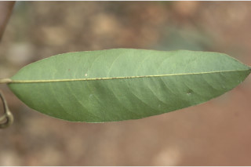
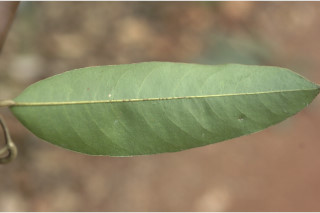
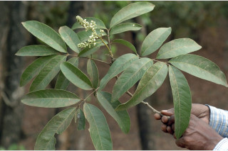
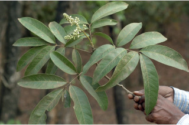

Large shrubs to small trees up to 12 m tall.
ದೊಡ್ಡ ಗಾತ್ರದ ಪೊದೆಗಳು ಅಥವಾ 12 ಮೀ ಎತ್ತರದವರೆಗಿನ ಸಣ್ಣ ಮರಗಳು.
Large shrubs to small trees up to 12 m tall.
பெரிய குத்துச்செடி முதல் சிறிய மரம், 12 மீ. உயரம் வரை வளரக்கூடியது.
Bark brownish, densely lenticellate; blaze pale orange.
ತೊಗಟೆ ಕಂದು ಬಣ್ಣದ ಛಾಯೆಯಲ್ಲಿದ್ದು ದಟ್ಟವಾದ ಬೆಂಡು ರಂಧ್ರಗಳನ್ನು ಹೊಂದಿರುತ್ತದೆ; ಕಚ್ಚು ಮಾಡಿದ ಜಾಗ ತೆಳು ಕಿತ್ತಳೆ ಬಣ್ಣದಲ್ಲಿರುತ್ತದೆ.
Bark brownish, densely lenticellate; blaze pale orange.
மரத்தின் பட்டை ப்ரவுன் நிறமானது, அடர்த்தியாக பட்டைத்துளைகள் (லெண்டிசெல்லேட்) உடையது; உள்பட்டை வெளிறிய ஆரஞ்ச் நிறமானது.
Branchlets terete, slightly pubescent when young.
ಕಿರುಕೊಂಬೆಗಳು ದುಂಡಾಗಿರುತ್ತವೆ,ಎಳೆಯದಾಗಿದ್ದಾಗ ಸ್ವಲ್ಪಮಟ್ಟಿಗೆ ಸೂಕ್ಷ್ಮ ಮೃದು ತುಪ್ಪಳದ ಸಮೇತವಿರುತ್ತವೆ.
Branchlets terete, slightly pubescent when young.
சிறியநுனிக்கிளைகள் குறுக்குவெட்டுத் தோற்றத்தில் வளையமானது, இளம்பருவத்தில் சிறிது உரோமங்களுடையது.
Leaves compound, paripinnate, rarely imparipinnate, alternate, spiral, to 40 cm long; rachis pulvinate slightly pubescent when young; petiolule 0.4-0.8 cm, stout, glabrous; leaflets 3-6 pairs, opposite-subopposite, 9-25 x 2.5-7 cm, narrow elliptic-oblong, apex obtuse or shortly acuminate with blunt tip, base acute, margin entire, coriaceous, glabrous; midrib raised above; secondary_nerves 12-25 pairs, gradually curved and ascending; tertiary_nerves broadly reticulate.
ಎಲೆಗಳು ಸಂಯುಕ್ತವಾಗಿದ್ದು ಮತ್ತು ಸಮಗರಿ ರೂಪಿಗಳಾಗಿರುತ್ತವೆ, ಅಪರೂಪವಾಗಿ ಅಸಮಗರಿ ರೂಪಿಗಳಾಗಿರುತ್ತವೆ,ಪರ್ಯಾಯ ಮತ್ತು ಸುತ್ತು ಜೋಡನಾ ವ್ಯವಸ್ಥೆ -ಯಲ್ಲಿದ್ದು 40 ಸೆಂ.ಮೀ.ವರೆಗಿನ ಉದ್ದವಿರುತ್ತವೆ;ಅಕ್ಷದಿಂಡು ಉಬ್ಬಿದ ಬುಡದ ಸಮೇತವಿದ್ದು, ಎಳೆಯದಾಗಿದ್ದಾಗ ಕೊಂಚ ಮಟ್ಟಿನ ಮೃದುತುಪ್ಪಳವನ್ನು ಹೊಂದಿರುತ್ತದೆ; ಉಪತೊಟ್ಟು 0.4 ರಿಂದ 0.8 ಸೆಂ.ಮೀ.ಉದ್ದವಿದ್ದು,ದೃಢವಾಗಿರುತ್ತದೆ ಮತ್ತು ರೋಮರಹಿತವಾಗಿರುತ್ತದೆ;ಉಪಪತ್ರಗಳು 3 ರಿಂದ 6 ಜೋಡಿಗಳಿದ್ದು ಅಭಿಮುಖಿ ಅಥವಾ ಉಪ ಅಭಿಮುಖಿಗಳಾಗಿರುತ್ತವೆ,ಗಾತ್ರದಲ್ಲಿ 9-25 X 2.5 – 7 ಸೆಂ.ಮೀ. ಇದ್ದು,ಸಂಕುಚಿತ ಅಂಡವೃತ್ತದ ಆಕಾರದಲ್ಲಿರುತ್ತವೆ,ಕಿರು ಪತ್ರಗಳ ತುದಿ ಚೂಪಲ್ಲದ ಅಥವಾ ಮೊಂಡಾಗ್ರವುಳ್ಳ ಕಿರಿದಾಗಿ ಕ್ರಮೇಣ ಚೂಪಾಗುವ ಮಾದರಿಯಲ್ಲಿದ್ದು, ಬುಡ ಚೂಪಾಗಿರುತ್ತದೆ, ಅಂಚು ನಯವಾಗಿದ್ದು, ಮೇಲ್ಮೈ ತೊಗಲನ್ನೋಲುವ ಮಾದರಿ -ಯಲ್ಲಿರುತ್ತದೆ ಮತ್ತು ರೋಮರಹಿತವಾಗಿರುತ್ತವೆ;ಮಧ್ಯನಾಳ ಮೇಲ್ಭಾಗದಲ್ಲಿ ಮೇಲೆದ್ದಿರುತ್ತದೆ;ಎರಡನೇ ದರ್ಜೆಯ ನಾಳಗಳು 12 ರಿಂದ 25 ಜೋಡಿಗಳಿದ್ದು ಕ್ರಮೇಣವಾಗಿ ಬಾಗಿದ್ದು ಆರೋಹಣ ಮಾದರಿಯಲ್ಲಿರುತ್ತವೆ;ಮೂರನೇ ದರ್ಜೆಯ ನಾಳಗಳು ವಿಶಾಲ ಜಾಲಬಂಧ ನಾಳ ವಿನ್ಯಾಸದಲ್ಲಿರುತ್ತವೆ.
Leaves compound, paripinnate, rarely imparipinnate, alternate, spiral, to 40 cm long; rachis pulvinate slightly pubescent when young; petiolule 0.4-0.8 cm, stout, glabrous; leaflets 3-6 pairs, opposite-subopposite, 9-25 x 2.5-7 cm, narrow elliptic-oblong, apex obtuse or shortly acuminate with blunt tip, base acute, margin entire, coriaceous, glabrous; midrib raised above; secondary_nerves 12-25 pairs, gradually curved and ascending; tertiary_nerves broadly reticulate.
இலைகள் கூட்டிலை, இரட்டைபடை சிறகுவடிவக்கூட்டிலை (பேரிபின்னேட்), அரிதாக ஒற்றைபடை சிறகு வடிவக்கூட்டிலைகள், மாற்றுஅடுக்கமானவை, சுழல் போன்று அமைந்தவை, 40 செ.மீ. நீளமானது; மத்தியகாம்பு (ராக்கிஸ்) பல்வினேட், இளம்பருவத்தில் சிறிது உரோமங்களுடையது; சிற்றிலைக்காம்பு 0.4-0.8 செ.மீ., தடித்தவை, உரோமங்களற்றது; சிற்றிலைகள் 3-6 ஜோடிகள், எதிரடுக்கமானவை - கிட்டதட்ட எதிரடுக்கமானவை, 9-25 X 2.5-7 செ.மீ., குறுகிய நீள்வட்டம்-நீள்சதுர வடிவானது, அலகின் நுனி மெட்டையானது அல்லது சிறிது அதிக்கூரியதுடன் அதன் முனை மழுங்கியது, அலகின் தளம் கூரியது, அலகின் விளிம்பு முழுமையானது, கோரியேசியஸ், உரோமங்களற்றது; மையநரம்பு மேற்புறத்தில் அலகின் பரப்பைவிட உயர்ந்து இருக்கும்; இரண்டாம் நிலை நரம்புகள் 12-25 ஜோடிகள், சீராக வளைந்தவை மற்றும் நுனி நோக்கி வளைந்தவை; மூன்றாம் நிலை நரம்புகள் அகன்ற வலைப்பின்னல் போன்றவை.
Inflorescence axillary or terminal panicled racemes; flowers polygamodioecious, white, sessile.
ಪುಷ್ಪಮಂಜರಿಗಳು ಅಕ್ಷಾಕಂಕುಳಿನಲ್ಲಿನ ಅಥವಾ ತುದಿಯಲ್ಲಿನ ಪುನರಾವೃತ್ತಿಯಾಗಿ ಕವಲೊಡೆಯುವ ಮಾದರಿಯವು; ಹೂಗಳು ಸಂಕೀರ್ಣಲಿಂಗಿಗಳಾಗಿದ್ದು ಗಂಡು ಮತ್ತು ಹೆಣ್ಣು ಹೂಗಳು ಪ್ರತ್ಯೇಕ ಸಸ್ಯಗಳಲ್ಲಿರುತ್ತವೆ ಮತ್ತು ತೊಟ್ಟುರಹಿತವಾಗಿರುತ್ತವೆ.
Inflorescence axillary or terminal panicled racemes; flowers polygamodioecious, white, sessile.
மஞ்சரி இலைக்கோணங்களில் அல்லது தண்டின் நுனியில் காணப்படும் பேனிக்கிள் ரெசீம் வகை; மலர்கள் பாலிகேமொடையீசியஸ், வெள்ளை நிறமானது, காம்பற்றது.
Drupaceous, 3-lobed, 3-sided; seeds ellipsoid, black
ಡ್ರೂಪ್ಗಳು3 ಹಾಲೆಗಳ ಸಮೇತವಿದ್ದು 3 ಬದಿಗಳನ್ನು ಹೊಂದಿರುತ್ತವೆ;ಬೀಜಗಳು ಅಂಡವೃತ್ತದ ಆಕಾರದಲ್ಲಿದ್ದು,ಕಪ್ಪು ಬಣ್ಣ ಹೊಂದಿರುತ್ತವೆ.
Drupaceous, 3-lobed, 3-sided; seeds ellipsoid, black
உள்ளோட்டுத்தசைகனி (ட்ரூப்), 3-அறைகளுடையது, 3-பக்கங்களுடையது; விதைகள் நீள்வட்ட வடிவானது, கருப்பு நிறமானது
 


 
